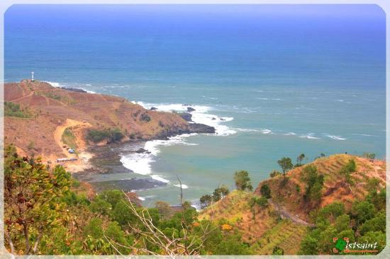
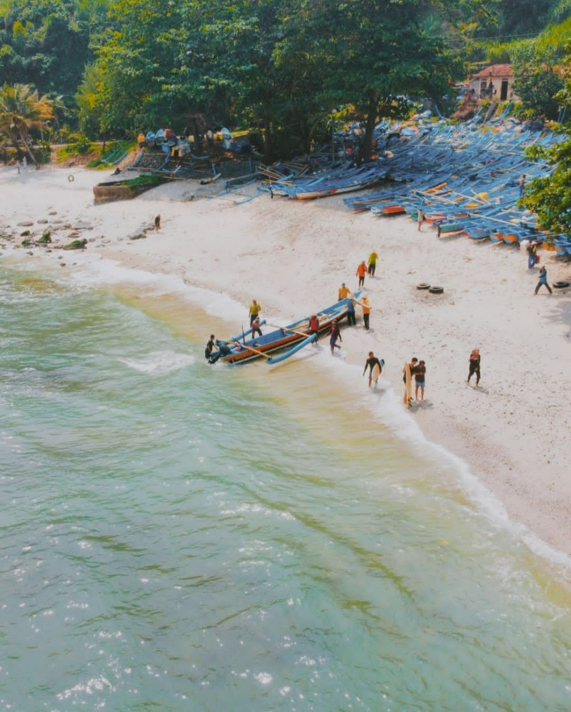
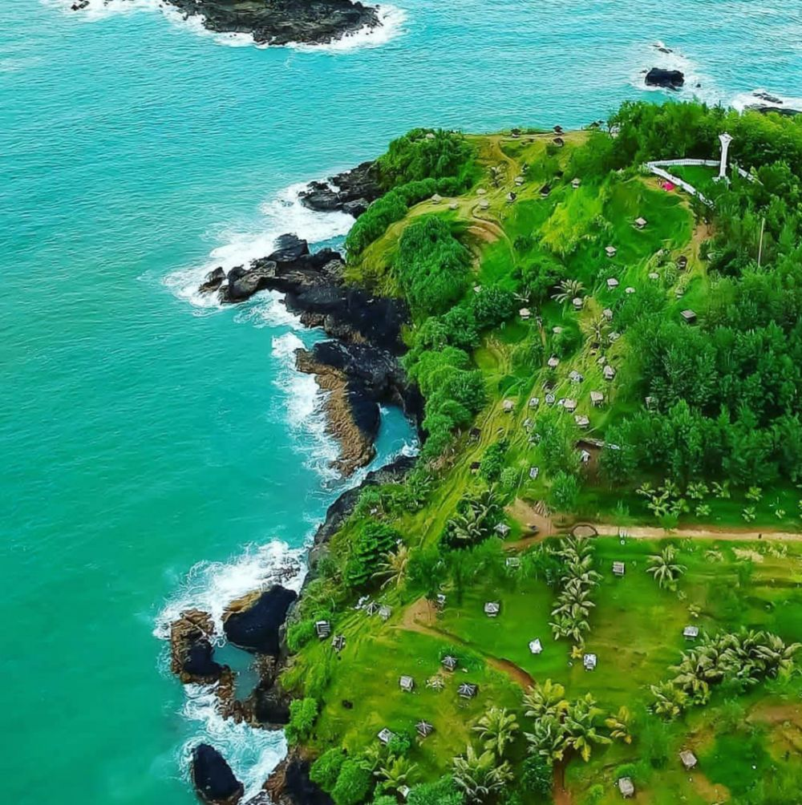
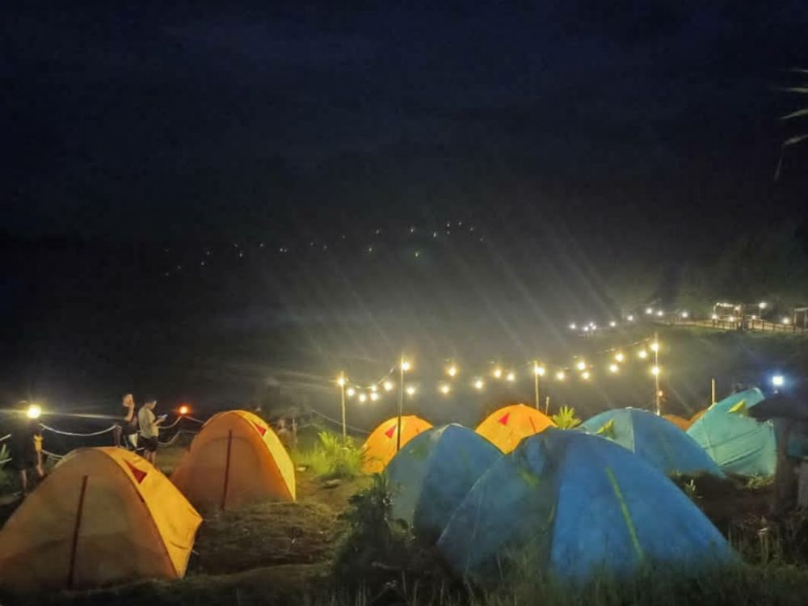

Memiliki berbagai macam pesona keindahan seperti tebing karst dan dikelilingi bukit-bukit indah menjadikan Pantai Menganti menjadi salah satu pantai terindah di Jawa Tengah. Dijuluki sebagai New Zealand-nya Indonesia, Pantai Menganti mulai banyak dikenal oleh mayarakat di luar Kota Kebumen. Banyak spot foto instagramable yang menyungguhkan pemandangan yang cantik sehingga Pantai Menganti mulai naik daun.Pantai ini sekarang menjadi destinasi yang ramai ketika muslim liburan tiba.
Sangat direkomendasikan untuk liburan. Yuk, simak tuntas informasi wisata Pantai Menganti mulai dari lokasi, Jam Operasional, harga tiket, dan tips mengunjungi Pantai Menganti.
Rute menuju Pantai Menganti terbilang cukup sulit karena memiliki jalur perbukitan yang menanjak dan berkelok-kelok. Meskipun begitu, selama perjalanan kamu akan disuguhi pemandangan bukit hijau yang indah.
Pantai Menganti memiliki jarak sekitar 42 km dari pusat Kota Kebumen dan memiliki jarak 30 km dari pusat Kecamatan Gombong. Rute tercepat menuju Pantai Menganti yakni dari Gombong melalui Kecamatan Ayah.Pantai menganti berada di alamat : Desa Karangduwur, Kecamatan Ayah, Kabupaten Kebumen, Jawa Tengah.
Pantai Menganti sebelum dijadikan objek wisata merupakan tempat mendaratnya perahu para nelayan setelah selesai menangkap ikan. Sampai sekarang, Pantai Menganti masih dijadikan sebagai tempat mendarat perahu nelayan sehingga masih banyak dijumpai perahu berwarna biru yang berjejer di bibir pantai. Waktu terbaik untuk mengunjungi Pantai Menganti adalah di pagi dan sore hari karena cuaca tidak terasa sangat panas. Sementara, jam operasional Pantai Menganti dimulai pukul 07.00 WIB dan tutup pada pukul 17.00 WIB. Pantai Menganti bisa dikunjungi kapan saja, jadi kamu bisa mengatur jadwal liburmu, ya.
Liburan di Pantai Menganti yang eksotis dengan panorama pasir putih dan bibir pantai yang dikelilingi perbukitan hijau tidak akan membuatmu menyesal. Udara yang segar dan angin yang sepoi-sepoi menjadikan tempat ini tempat yang cocok untuk healing loh. Tiket masuk juga sangat terjangkau, yakni hanya sebesar Rp10.000, jadi tidak akan membuat kantongmu kering. Pantai Menganti juga menyediakan berbagai wahana seperti sepeda gantung dan balon udara. Kamu cukup membayar Rp15.000 untuk menggunakan wahana tersebut. Sangat ekonomis, kan?
Sebelum melakukan perjalanan ke Pantai Menganti, sangat disarankan untuk mengecek keadaan kendaraan demi keselamatan di dalam perjalanan. Lebih baik menggunakan kendaraan pribadi seperti mobil atau motor karena transportasi umum masih sangat jarang.Keindahan Pantai Menganti memang bisa membuat pengunjung berlama-lama di pantai. Pantai Menganti juga memiliki pemandangan sunset dan sunrise yang indah, jadi sangat disayangkan jika dilewatkan. Oleh karena itu, lebih baik kamu melakukan camping dengan teman-teman atau keluarga. Pantai Menganti menyediakan camping ground dan surfing spot, kamu bisa sepuasnya bermain di sini.
